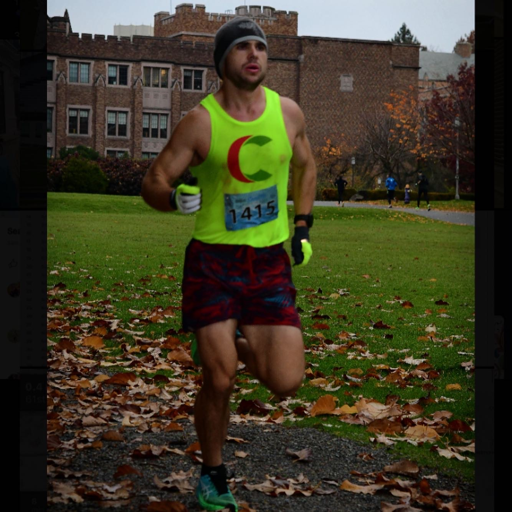
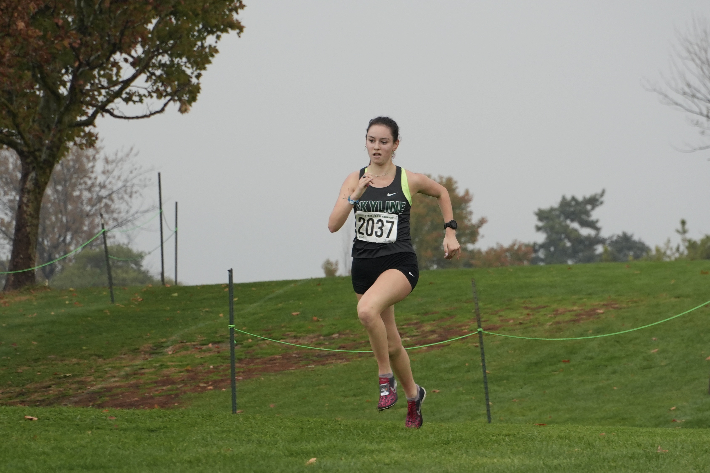
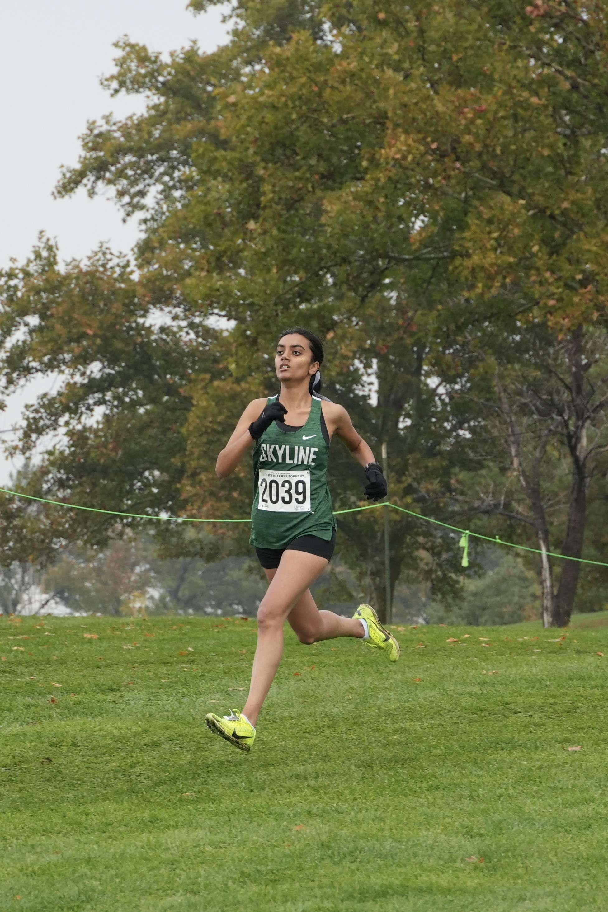
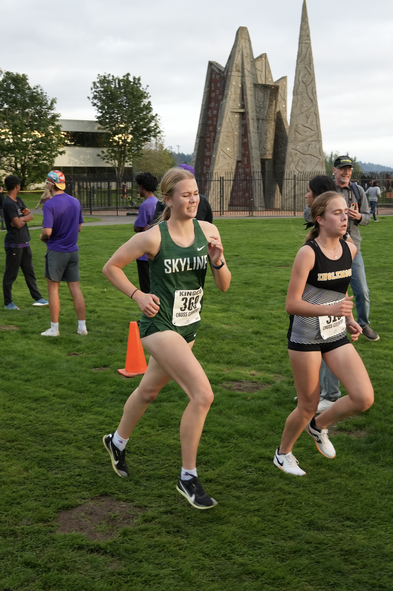
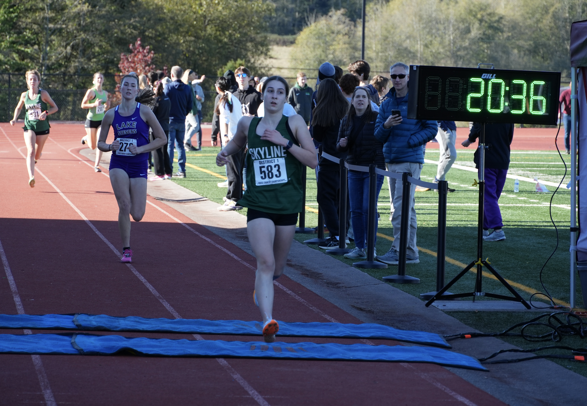
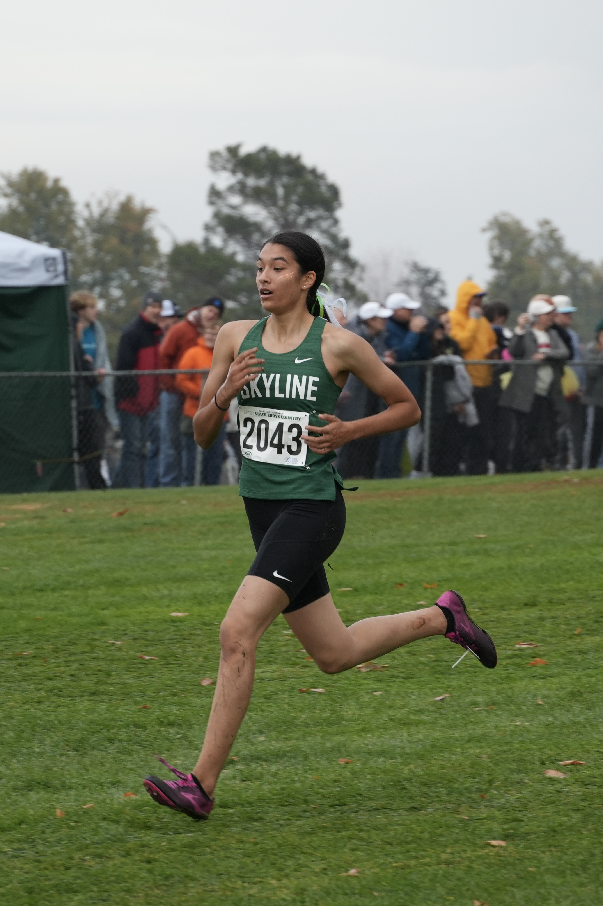
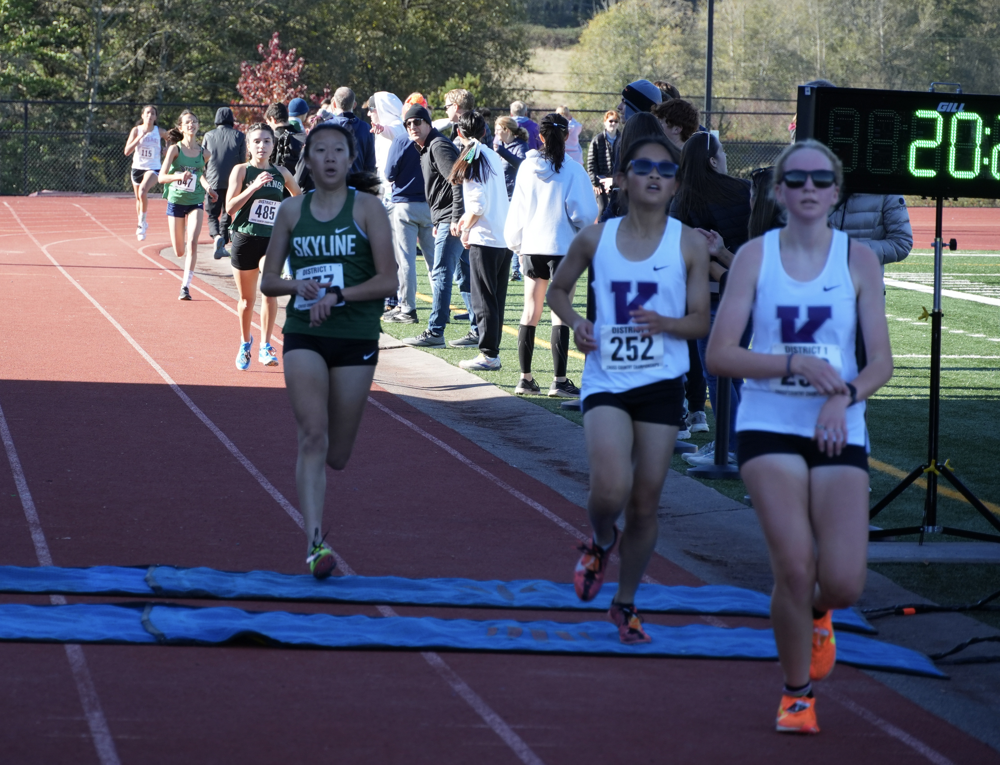
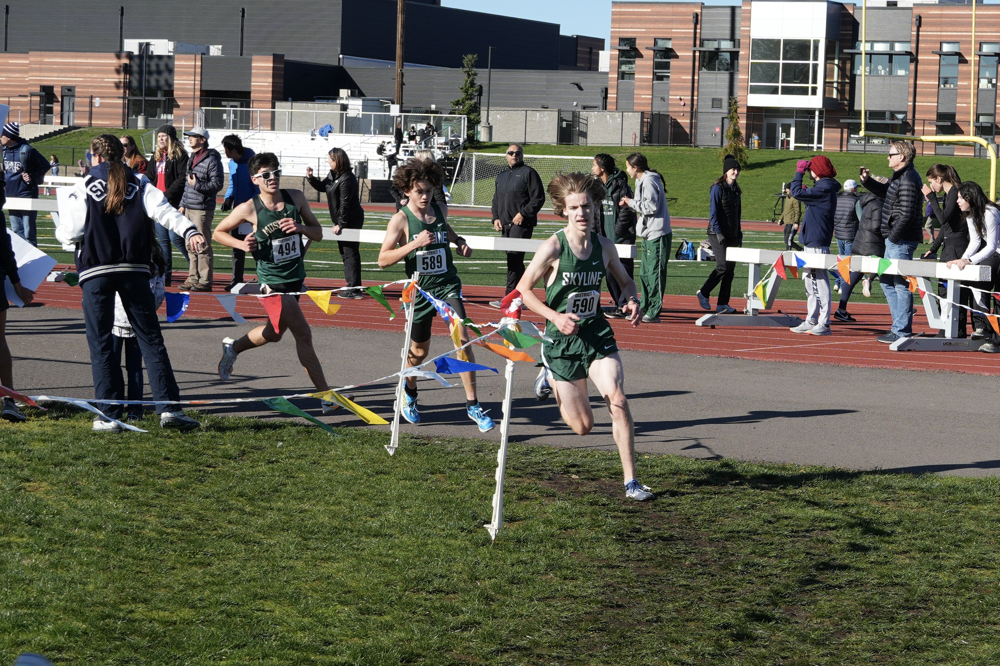
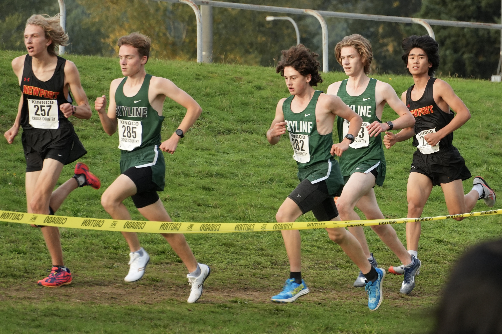
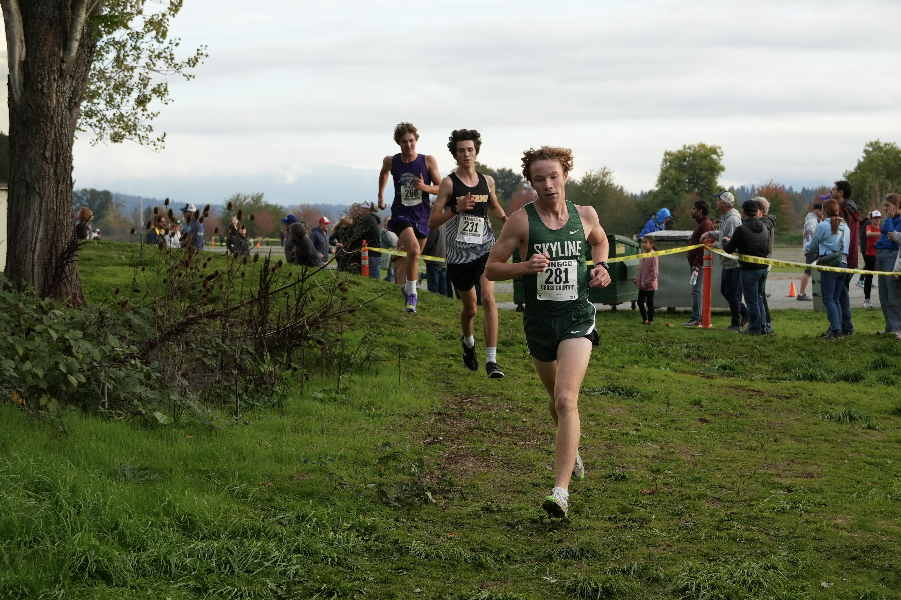

Home
Incoming Freshman - Click Here!
Use the sidebar to look at all our Cross Country info!
Join our Band for the fastest updates right to your phone! This is what we use to send out team updates and information. Go to your App Store, and type in "Band". There will be an app with a Green logo of a lowercase "b". When you join, please use a real name so we don't have a 3rd "BAND USER #11". Search for "Skyline Cross Country" and request to join. You will be added when of the coaches approves it.
Our team is consistently in the top group in the fastest league in the State, and we look to continue that this year! Last year, both our boys and girls finished 3rd in KingCo, and if we run well, we could finish in the top 3 again this year. We don't know how many berths we will get to State, but both our boys and girls will have a run at qualifying as a team.
To give yourself and your teammates the best chance at doing well this season, the best thing you can do is show up this summer, and enjoy the sport!
Meet the Team
Coaches
• Brendan Hyland
Coach Hyland is a PE teacher at Skyline and a life-long runner ranging from mid-distance, up to the marathon. Hyland has been coaching at Skyline since the school opened in 1997, and has coached 23 State podium finishers (Top 16), including 2x State Champion Anna Callahan in cross country, and 4 State podium teams (Top 4), including the Girls State Champions in 2001! He also enjoys mountain biking and fly fishing in his free time.
• Allie Willson
Coach Willson is a Science Teacher at Skyline who ran at one of the top programs in the State at Tahoma, and continued on to run at Whitman in Walla Walla. She used to be a varsity lacrosse player, and has a 1 year old son named Conrad who you will see out at practice and meets on occation.
• Sam Symmes
Coach Symmes ran for Coach Hyland, and graduated from Skyline in 2015. He is a marathon and ultra runner who also enjoys lifting weights.
Senior Leaders
• Sydney Collier
Sydney started running track and cross country when she was five years old, has finished third at State in Cross Country, and in the 3200m in Track, and has run 17:24 for a 5k. Her favorite memory from cross country was traveling to Portland with the team for Nike Portland XC, and her favorite meet is Twilight. As we learned down in LA, Sydney's favorite animal is the Giraffe.
• Nithya Kasireddy
Nithya started running cross country and track freshman year of high school, and has worked down from 28 minutes to 20:10 for a 5k, and qualified for State with the girls team last year. Nithya loves finishing races with her friends, like Naomi at Nike Portland, and Ella at Twilight, as well as the community and positive energy everyone brings to the team. Her favorite animal is the Fox.
• Ella MacDonald
Ella began her running career as a freshman in High School, ran 25 minutes in her first 5k, and has gotten that all the way down to 21:01. Ella's favorite cross country memory is hugging Nithya after finishing Twilight last year after they both PR'd, then dressing up as minions with the team for the fun run. Her favorite animal is an (Ella)phant. Ella loves that cross country has an awesome community, and that everyone is so welcoming and kind.
• Aleise Robertson
• Naomi Kang
• Ally Meyer
Ally started running cross country in middle school, and has run 23:42 for the 5k. Her favorite meet is Liberty Twilight during the track season, and her favorite animal is the Chihuahua.
• Faith Masseth
• Victoria Mata
Victoria has run cross country and track every year since sixth grade. She started freshman year over 29 minutes for a 5k, and has PR'd at 25:28. Her favorite part of cross country has been planning and going to team bonding events, like pasta feeds, and lake days during the summer, and just hanging out with the team. Her favorie animals are the Brown Bear and the Moose, and she's excited for cross country to get started again.
• Bella Duong
• Alyse Schroeder
• Acacia Featherstone
Acacia started running cross country in sixth grade, and has been out every year since. She has a PR of 26:53 in the 5k. Acacia loves running in the morning during our summer practices, as it's a great way to wake up and hang out with friends at the same time. She also loves dressing up with the whole team at the Twilight Invitational. Her favorite animal would either be a Snake or Raven.
• Maddy Harden
• Alex Hong
• Gavin Johnson
Gavin is a big Track and XC guy, he came for the running and stayed for the good vibes. He has run 18:42 for a 5k, and 5 minutes flat for the mile. Gavin's favorite parts of the sport are long runs with the boys and the track and cross country Twilight Invitationals. His favorite animal is the Armadillo. "Ask not what cross country can do for you, ask what you can do for cross country -JFK" - Gavin Johnson.
• Tyler Foggoa
• Aarul Motiani
• Ben Nelson
Ben started running in sixth grade, and has run every year excluding the pandemic. Ben's favorite memories of cross country have been the bus rides to and from the invitationals, as well as the big meets we get to go to, like Twilight, Hole in the Wall, and Nike Portland XC. His favorite animals are Sea Slugs and Anemones.
• Thatcher Olson
• Ethan Howe
Ethan started running track and cross country in sixth and seventh grade, and his favorite memories from cross country are the Twilight Invitational, and Nike Portland XC. Ethan's favorite animal is a Dog.
• Dylan Shek
• Colin Muldowney
• Evan Allbritton
• Jalen Wu
Returning Varsity Runners
• Sydney Collier - Senior
• Nithya Kasireddy - Senior
• Ella MacDonald - Senior
• Megan Vander Mey - Junior
Megan started running cross country in Middle School, and returned to it Sophomore year, making State running 20:36 for the 5k. Her favorite cross country memory is hanging out with the girls team the night before State, and her favorite animal is the Dolphin.
• Abby Riley - Junior
Abby started running track and cross country in middle school, and ran at State last fall with the team after running 20:41 for a 5k. Abby's favorite memory is going to State with the girls team last year, and making ribbon hair ties in the hotel the day before the race, as well as just hanging out with the team. Her favorite animal is a Turtle, and she has a goal to run under 19 minutes for the 5k by senior year.

• Janna Stibbe - Junior
• Anika Aageson - Junior
• Lucy Duong - Sophomore
Lucy started running in Middle School, qualified for State last year, and PR'd at Nike Cross Regionals in 20:16 for a 5k. Her favorite cross country memory was going to State with the team last year, and her favorite animal is a Bunny.
• Logan Mucha - Junior
Logan started running in 8th grade, and got down to 18:17 for a 5k Freshman year, then brought that down to 16:45 as a sophomore and individually qaulified for State. His favorite memories from cross country have been getting to go to State, and spending time with his teammates. When you meet Logan, you will have to ask him about his favorite animal, the Rat, and meet Charles, who has run with Logan since he started running.
• Vlad Kosolapov - Junior
Vlad has run cross country and track the last few years, working down from a 20 minute 5k to 16:49 for a 5k, 4:46 for the mile, and 10:07 for 2 miles. Vlad's favorite memories are Nike Portland XC, and White Pass Cross Country Camp with the team. His favorite animal is a Dog.
• Lincoln Fraser - Junior
• Shaan Brar - Junior

• Sam Ryan - Junior
Sam started running competetively during track in 8th grade, and qualified for the KingCo Championship this Spring in the 800m, running 2:04. His favorite running memory was running a half marathon with Coach Symmes, and Lincoln last summer, and is favorite animal is the Penguin.
• Yash Brar - Sophomore
Yash started running in Middle School, and got the Beaver Lake records for the 800m and 1600m. In High School, he has run 16:06 for a 5k, and his favorite running moments are the Twilight Invitational, and being on the bus that broke down in the mountains on the way home from the Eastmont Invitational.